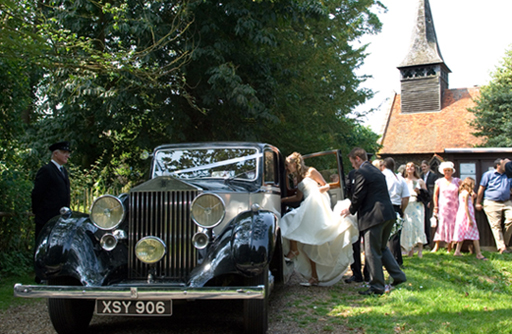
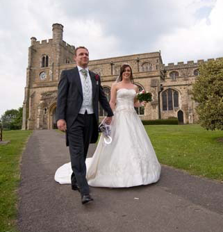
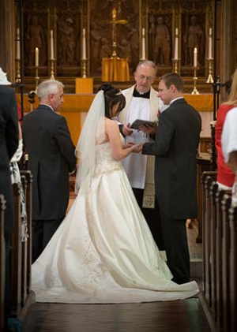

Church Weddings at Nixons Wedding Car Hire
Church weddings are obviously an institution in Great Britain and Nixon's Chauffeur to Church of England, Roman Catholic, Methodist, Baptist and any other denomination that is required.
We do aim to 'get to the Church on time' as you might expect and feel a sense of satisfaction in doing so.
 
Choice of Church
The reasons for choosing a particular Church for a wedding ceremony seem to be many fold. Maybe it’s a familiarity with the Church a faith held or even the aesthetics of the building.

"Being a chauffeur I have been too many Churches in the Essex area time and time again. Obviously I get to see the buildings and occasionally talk to the Vicars, Priests etc. I have found that there are particular Churches I like to go to but I do have a favourite - St Mary’s Church Bocking. It is a Church with a sense of local community but enthusiastically welcomes Brides and Grooms from outside to have their special day there. From talking to the Clergy and staff it is clear there is a forthcoming friendly attitude and from speaking to Brides and Grooms that I have Chauffeured away from St.Mary's all I have heard is positive reports."
For further information about St.Mary's Church Bocking go to www.stmarys-bocking.co.uk